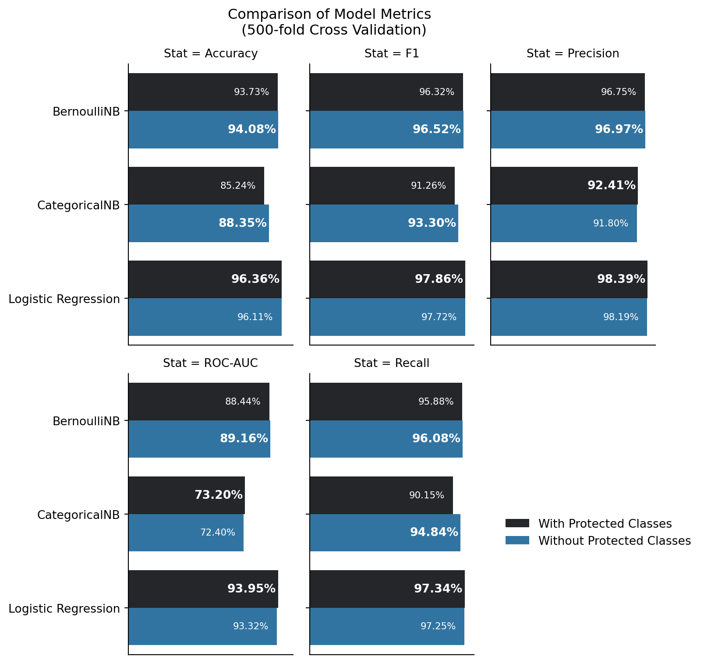
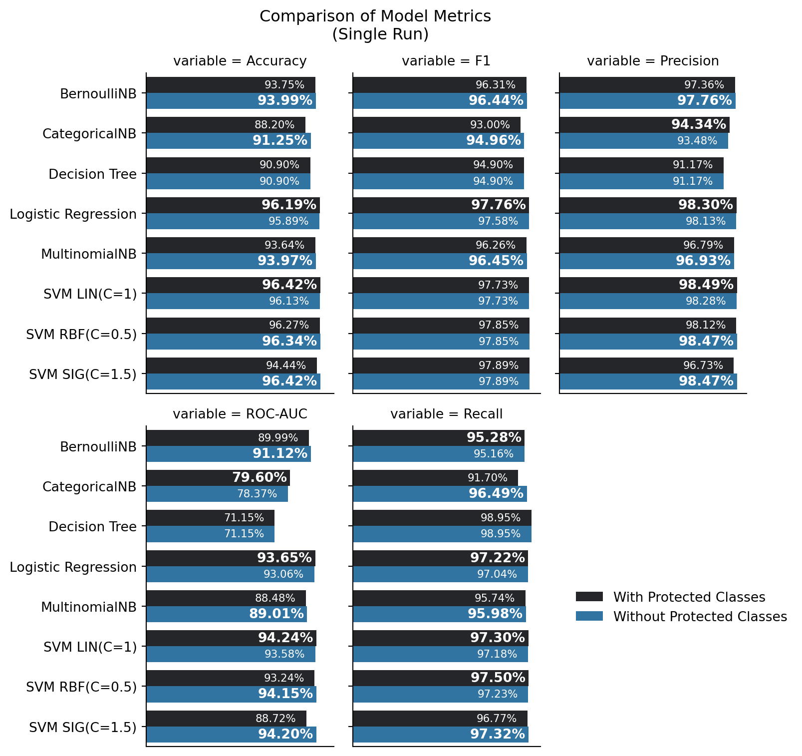

12 Conclusion
Many results between models trained with and without protected class information had statistically significant difference in performance, but not an impactful or operationally sufficient performance increase to justify their use or incorporation as a business practice.
Operationally and ethically speaking, the percentage difference in performance for the best models were insufficient to justify the inclusion of protected class data as part of a model to make a decision on mortgage loan applications. They also do not seem to explain any disparities in loan approvals or denials for applicants on the basis of age, gender, or race.
12.1 Summary Graphics of Results
12.1.1 500-fold Cross Validations
Figure 12.1 depicts 6 models in pairs (per model type, one trained with, and one trained without, protected class information), and the mean model metrics for each coming out of the 500-fold cross validation. These only depict the cases in which there was a statistically signficant difference in performance between the models trained with and without predicted class information. The preferred model of the two per model category is highlighted in bold. For this portion - the concept of ensembles (namely bagging) will be applied here. Namely, were these models to be combined in an ensemble method, each would have a vote to the final classification, and in such a situation, the majority would rule. That concept is applied to each of the metrics that were evaluated for each model during cross validation.
Examining this plot, the following facts are evident:
Accuracy favors exclusion of protected class information in a majority of models
F1 Score prefers exclusion of protected class information in a majority of models
Precision favors inclusion of protected class information in a majority of models
Recall favors exclusion of protected class information in a majority of models
ROC-AUC favors inclusion of protected class information in a majority of models
The favoring in precision and ROC-AUC may be of further concern. Examining in these cases, the greatest difference in scores is 0.63% for ROC-AUC for Logistic Regression, and 0.61% for precision. Regarding precision, this is a measure of the ratio of true positives to the total number of positive predictions (e.g. true and false positives). This means that the model with protected class information reduces false positives (people that shouldn’t get approved for a mortgage, but do) when protected class information is included in the model. ROC-AUC is a measure that examines the true positive rate and false positive rate at differing thresholds. This metric’s increase is directly correlated with the increase in precision
Recall should be taken into consideration here, though. This metric signifies the risk of false negatives being more costly than false positives. False negatives are impactful to a business with customers - in this case, lenders and potential borrowers, as the denial of a mortgage application to someone who should truly be eligible costs the lender business and potential income. In the case of a lender, a balance of accuracy and recall should be prioritized - the lender should seek to approve mortgages that need approval, deny mortgages that should be denied, while mitigating the opportunity cost of denying a mortgage to a worthy applicant. In this light, considering the outcomes for accuracy, recall, and F1 score - it makes more business sense to exclude protected class information from consideration in machine learning models.
Similarly F1 score is a measure of how harmonically balanced recall and precision are. Good F1 score would signify a balance in the risk of false positives (those who are granted a mortgage when they should not be), and false negatives (those who are denied a mortgage, but should receive one). F1 score, the majority of the time, provides better balance when protected class information is excluded.
12.1.2 Single-Run Test Comparisons
Next are the single run model comparisons. Each set of models (trained with and without protected class information) are directly compared side-by-side on a per-model basis to examine model metrics of accuracy, precision, recall, F1, and ROC-AUC scores. These scores are important to determine how well a model is performing. As an administrative note - SVMs were executed multiple times with multiple cost values. The included results in this table are the SVMs of each kernel type that had the best performance in metrics for a given kernel and cost (Radial Basis Function, Linear, and Sigmoid, C=0.5, 1, or 1.5). The decision point for their inclusion was based upon ROC-AUC score.

In each of these result plots, the favored model is highlighted and bold in the percentage performance label for each metric in question. In some cases there are ties between the models (especially with the Decision Tree producing identical results). Cases of ties are excluded from the following statements regarding majority counts.
Examining Figure 12.2:
For accuracy, exclusion of protected classes is favored over inclusion in the majority of models
For F1, exclustion of protected classes is favored over inclusion in the majority of models
For precision, exclusion of protected classes is favored over exclusion in the majority of models
For ROC-AUC, inclusion of protected classes is favored over inclusion in the majority of models
For recall, exclusion of protected classes is favored over inclusion in the majority of models.
Examining these metrics in totality makes the following points immediately evident:
the only case in which there was better performance in a majority of models with including protected classes was that of recall. Models here that favored inclusion of protected classes had performative increases of less than 0.27%. Furthermore, recall is a measure that examines the rate of true positives to the combination of true positives and false negatives. This means that including protected class information improves the true positive rate, and would reduce false negatives (people who should be offered a mortgage, but aren’t) on the basis of age, gender, and race. This performative increase is small, and there is no measure for significant differences in half of the models in which inclusion of protected classes was favored.
the inclusion of protected class information in machine learning models for assessing whether an applicant should be approved or denied for a mortgage appplication is not advantageous to lenders, given publicly available data and the methods used in this research.
12.2 Final Thoughts
There is a common thread across almost every model implemented in this study. The results are consistent across multiple model types and methodologies and is particularly revealing.
Use of any of the methods included in this research would not offer an organization a substantial edge, benefit, or higher performance when including protected class information as predictors. In the case of the best performer for singly-run models, support vector machines with RBF kernel, has the highest performative ROC-AUC for the exclusion of protected classes, with similarly high metrics across the board.
It’s remarkable, revealing, and actually quite astounding. Any statistical or data analytics researcher exploring publically available data and applying a thorough amount of rigor could clearly reach the same results and conclusions found in this study. Other important, non-publically available information that is relevant to one’s finanical status as a mortgage applicant, would likely provide a greater explanation of data variation and the reasons behind an applicant’s denial for a mortgage than any racial, ethnic, age-based, or gender-based features of an applicant / co-applicant pair.
It is unlikely, but possible, that financial institutions leverage machine learning models as those explored in this research, with or without protected class information (or proxies for it) in their training and prediction datasets. It is clearly evident that for the vast majority of models in this study, the publicly available information does not favor their inclusion in modeling.
Sure, when one is talking about millions, or potentially billions, of dollars at stake for a company to gain, the small performative increases of between 0.1% and 0.6% may initially appear to be substantial in terms of a company’s bottom-line, where they exist. It seems that these perceived benefits would be far outweighed by the cost of disenfranchising countless potential borrowers and facing a hefty risk of expensive lawsuits. The cost of time in court, litigation, lawyer fees, settlements, and/or paying out an actual loss in court is likely to go far and beyond any potential financial gain. Overall, the gain is operationally ineffectual.
Per Cornerstone Research&text=In%202023%2C%206%25%20of%20cases,the%20highest%20level%20since%202010.), the median “simplified tiered damages” amount - the estimated potential per-share loss in the valuation of a company as a result of a class-action lawsuit, was $313.3 million dollars in 2023, and the average settlement amount was $47.3 million dollars.
The performance increase would have to be at least X.XX% to break even at the one-billion-dollar-per-year business scale, and would have to factor in false positive rate alongside true positive and negative rates, maximizing true predictions while minimizing false positives. Similarly, with the given performance increase of including vs. excluding protected classes, in the best case, the amount of business a company would have to do in mortgages a year would have to be $X.XX to cover the potential cost of an average class-action lawsuit in 2023 using the mean accuracy from the cross-validated logistic regression model in this study. The loss of funds to class-action payouts, shareholder loss due to loss of public confidence in a company, and any other regulatory fines and fees on top of this, far out weigh the risk. As an example in 2023, Bank of America was ordered by the Consumer Financial Protection Bureau to pay $12 million in penalties for non-compliance with HMDA regulations. Other fines and fees can be imposed as well, and this exposes a company to substantial risk to their finances and future as a company. Fines can accrue up to $1 million per day for a company that knowingly or willingly violates a consumer finanical law. Intentional use of models including protected class information would fall within this category, and could accrue $365 million in fines to the US Government per year.
Per NFCU’s annual report for 2023 - NFCU gained an additional $17.2 billion in new loans from 2022. Leveraging the best performing model in cross validation - Logistic Regression with protected class information at a 0.246% increase - would correspond to a $41.82 million increase compared to not using protected class information. Here, one can can see the scale - at first glance, that looks like a whole lot of money. But considering the cost of a class-action lawsuit, however, the company would be out about $7 million in a settlement alone (assuming that the settlement was at the 2023 average for a class-action). This also doesn’t cover any legal fees a company may have to pay during the class-action process, or any regulatory fines and fees a company may have to cover as a result of any government or regulatory inspections. The $7M loss from a class-action alone is large, and when adding in the risk of other fines and fees - this seemingly large-scale gain in the short-term could learn to substantial finanical loss, damage to company reputation, and other challenges in the long-term.
It appears more likely that any modeling performed in the lending industry would include non-public information (whether company proprietary, or private to an applicant) - and that such models would provide a greater explanation on the outcomes for predicting whether or not an applicant would be approved for denied a mortgage application. Performance increases are important for models, and getting there with relevant variables and data is paramount to moral and ethical business operations.
Any financial institution leveraging machine learning models should expect a level of ethical due-diligence of their analysts to maximize predictive performance of any operational model while operating within the constraints of the law, regulatory guidance and requirements, corporate policy and procedure, and industry best-practices. The inclusion of protected class information clearly runs counter to the law and regulatory requirements, and even if a company chose to break those lines, they’re only hurting themselves and their potential borrowers.